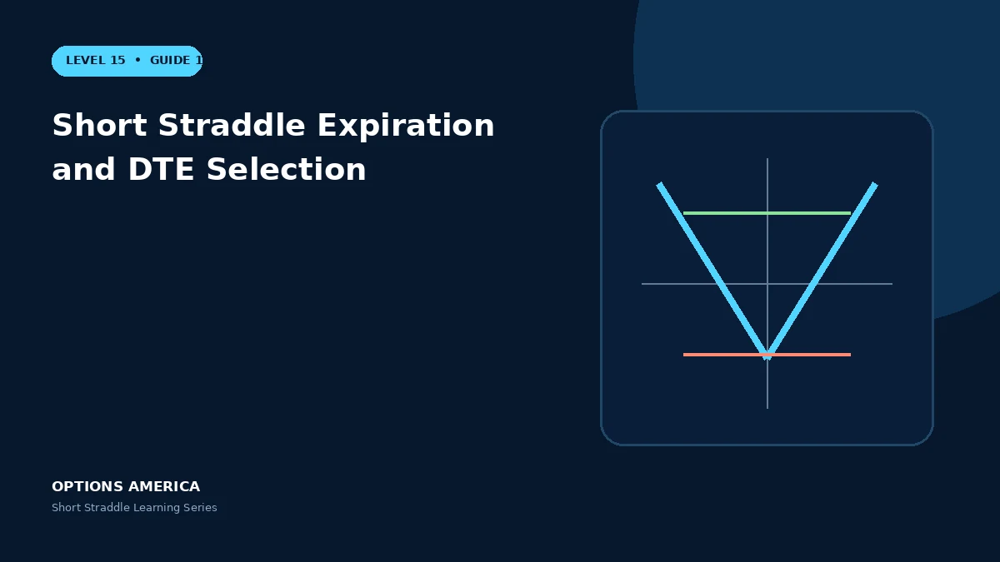

Choose expiration using theta, gamma, event timing, liquidity and the holding period of a short straddle.
Short DTE
Near-term straddles decay rapidly when price is stable but react sharply to movement. There is little recovery time after a gap or move toward a breakeven.
Longer DTE
More time generally produces a larger credit and more vega exposure. The position has slower gamma initially but remains exposed to news and volatility changes for longer.
Match the thesis
Select an expiration that matches the forecast window and explicitly includes or excludes known catalysts. Do not choose duration from annualized premium alone.
Liquidity and exits
Compare spreads and open interest across expirations. Establish a profit target, loss trigger and latest exit date before the final week's gamma becomes dominant.
A practical example
Compare 14-DTE and 45-DTE 100 straddles. The first has faster decay and sharper gamma; the second has more vega and more calendar time for an adverse event.
This simplified scenario focuses on expiration outcomes; live prices and risks will differ. Live option prices also reflect the underlying price, time decay, rates, dividends, liquidity and transaction costs. Greeks are theoretical estimates, not guarantees.
Build a risk-first trading plan
Before using short straddle expiration and dte selection, record the underlying price, strike, expiration, total credit and contract multiplier. Calculate both expiration breakevens, then model losses beyond them rather than stopping at the profitable range. The maximum credit is visible at entry, but the largest future loss is not.
Stress at least five underlying prices, a volatility increase and decrease, and several dates. Include a gap that cannot be adjusted intraday. Review delta, gamma, theta and vega at the position and portfolio level because several neutral premium trades can become directional together.
Define a profit target, maximum tolerated loss, margin reserve, event rule and latest exit date. Use a single multi-leg order where possible and verify both legs after every fill or adjustment. This process does not eliminate risk, but it makes the decision measurable and repeatable.
After the trade, record actual movement, volatility change, slippage and the largest directional exposure. Comparing those results with the original forecast helps separate sound execution from a lucky outcome and improves future duration, strike and position-size decisions.
Frequently asked questions
Is shorter DTE safer?
No.
Why use more DTE?
It may reduce initial gamma and provide more management time.
Should expiration include earnings?
Only intentionally.
Continue the Short Straddle cluster
Explore related guides: Short Straddle Margin and Buying Power · Short Straddle Options Strategy Explained · Short Straddle vs Short Strangle. For a structured sequence, use the free Level 15 – Short Straddle course.
Options involve risk and are not suitable for every investor. This material is educational and is not investment, tax or legal advice. Greeks are theoretical estimates, and contract terms and broker requirements can vary.